AI Music Video Edit
/mv/edit — the post-generation editor for a music video: recreate the cover or any single scene in place, adjust the output settings (title/author/subtitle/watermark), and Merge to re-render. No Project mode and no Save; every edit is ephemeral until Merge, and lost if the user leaves first.
| Platform | YouCam Muse Web — captured at 1403×697 (desktop) AND 375×812 (phone), the D8 exception (this programme’s second) |
| Audience | QA |
| Scope | Both entries into /mv/edit (Result and History), Cover recreate, per-scene storyboard recreate (desktop + the phone full-screen scene view), output settings, Delete this Project, Merge MV and its insufficient-balance/reload edge cases. |
| Out of scope | The destination screens Merge and Delete route to (/mv/creating is S2’s; /history is S4’s) — captured to their first frame and no further. Unpublish-before-edit (MV-E7) is named, not captured (S2’s P8 / S4’s P4 own it). |
| Source | specs/areas/02-mv-creation.md (MV-P5, MV-E2, MV-E5, MV-E7, AC-MV-12/13/14/19/17b), specs/00-overview.md, and the running app |
↓ Flow Diagram — full user journey (click to expand)
Mermaid source
flowchart TD
Entry["/mv/result Edit MV (real) OR History Edit MV (fabricated)"] --> Tour["Header + three sections"]
Tour --> Cover{Recreate cover?}
Cover -->|yes, flat 4| CoverDone["Cover overwritten, no undo"]
Tour --> Scene{Edit + Recreate a scene?}
Scene -->|yes, per-shot cost| SceneDone["Scene video overwritten, version row grows"]
Tour --> Settings{Toggle a setting?}
Settings -->|yes| SettingsDirty["Marked dirty"]
CoverDone --> Dirty{Any pending edit?}
SceneDone --> Dirty
SettingsDirty --> Dirty
Dirty -->|no| MergeOff["Merge MV disabled"]
Dirty -->|yes, sufficient balance| MergeOn["Merge MV -> /mv/creating (S2 territory)"]
Dirty -->|yes, insufficient balance| Iap["Upgrade Your Plan (buy-credits IAP)"]
Tour --> Delete{Delete this Project?}
Delete -->|confirm| DeleteDone["Discards in-memory flow -> /history (no backend delete)"]
Entry -.->|reload, no flow state| MvE2["router.replace(/mv/room) (MV-E2)"]
Tour -.->|leave with no Merge| MvE5["Every edit lost (MV-E5)"]
| ID | Path | Entry point | Steps | Outcome |
|---|---|---|---|---|
| P1 | Entry + screen tour | /mv/result or /history (⋯ menu) | 5 steps | /mv/edit renders with a real or fabricated storyboard |
| P2 | Cover | COVER IMAGE section | 4 steps | The cover image is replaced; the balance drops by the flat Recreate-cover cost |
| P3 | Scenes | STORYBOARD section (desktop) / a clip tap (phone) | 8 steps | The active scene’s video is replaced; the balance drops by that shot’s dynamic cost |
| P4 | Output settings & delete | Right rail (desktop) / below the scene editor (phone) | 3 steps | A settings change marks the flow dirty; Delete discards the in-memory flow and leaves |
| P5 | Merge MV | Floating Merge MV footer | 4 steps | /mv/creating (sufficient balance) or the buy-credits IAP (insufficient) |
Both ways into /mv/edit — a real generation’s Edit MV, and History’s Edit MV, which fabricates flow state — plus the header and section layout.
- P1-S1 On /mv/result, clicks “Edit MV” in Quick Actions.
- P1-S2 Arrives on /mv/edit.
- P1-S3 —
- P1-S4 On /history, opens a done MV row’s “⋮” menu and clicks “Edit MV”.
- P1-S5 —
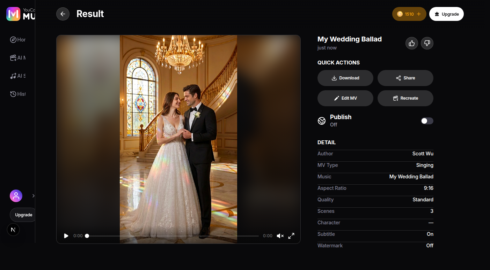
- 1Edit MV
- Only reachable while the MV is neither published nor in review — MV-E7, S2/S4’s territory, not captured here.

- 1Back
- 2Credits
- Title: “Edit Music Video”
- No Save button anywhere on this screen (MV-08) — every edit below is ephemeral until Merge.
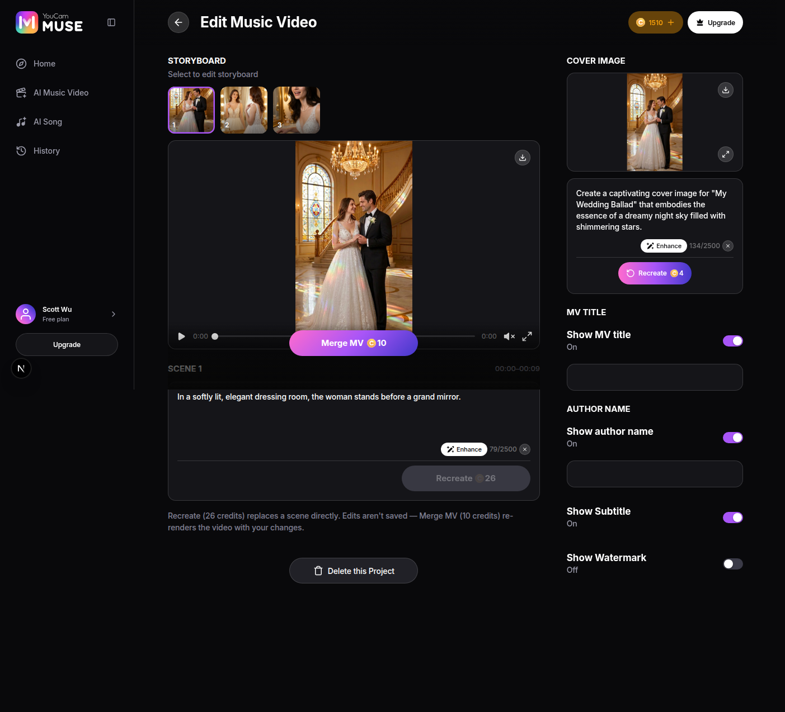
- STORYBOARD holds the clip strip, inline preview and scene editor (P3 below).
- The output-settings rail holds four rows: MV TITLE, AUTHOR NAME, Show Subtitle, Show Watermark (P4 below).
- No read-only type/song/ratio chips and no shot-count line (corrected 2026-08-20 against DP — DESIGNER-TODO A25).
- Output settings are inline rail sections, not a modal.DP puts the title/author text inputs there; the two ON/OFF switches are WA’s own addition (C2 contract fields, P4 below).
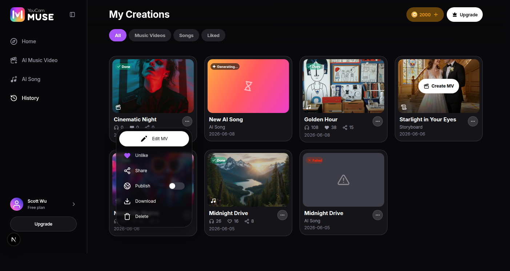
- 1Edit MV
- The second, external entry point into this flow.
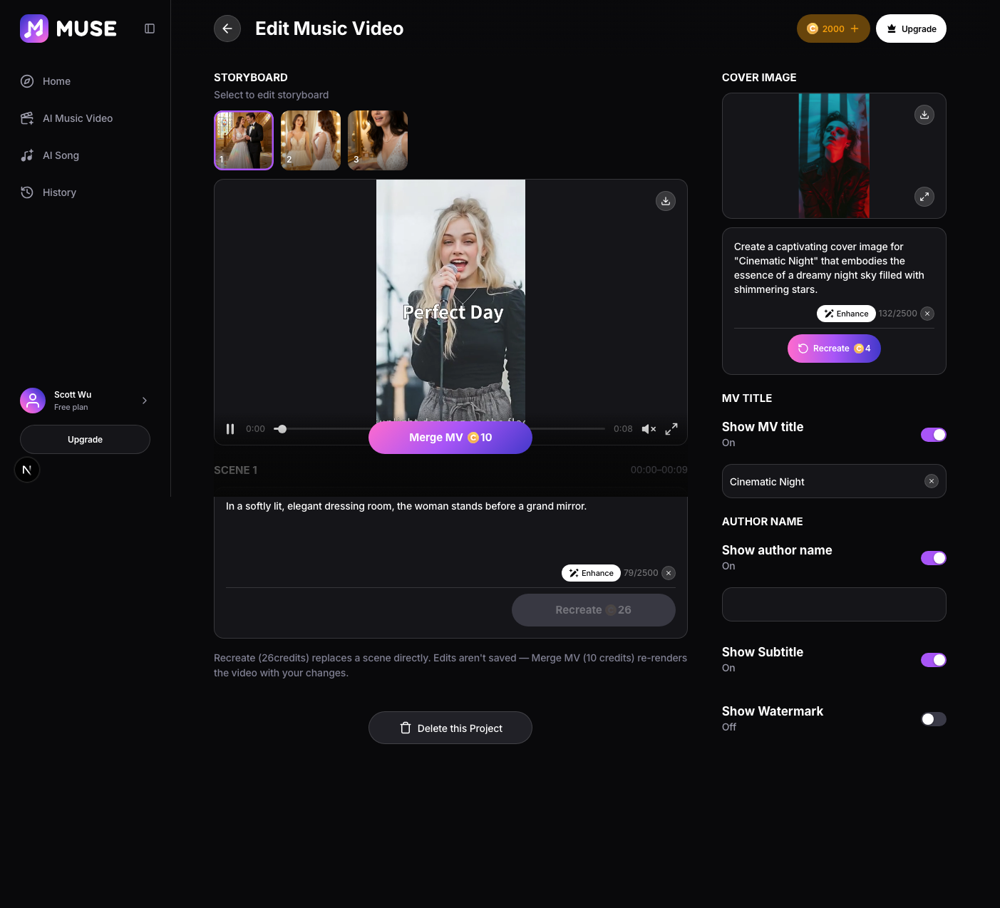
- MV title field pre-filled with the row’s own title: “Cinematic Night”
- This is a prototype simplification, not a product rule.See Prototype Simplifications below.
- Every other section (cover, scenes, settings) behaves identically to the real-entry path.
Preview, expand-to-lightbox, and Recreate — overwrites the cover in place, no picker, no undo (AC-MV-12).
- P2-S1 Views the COVER IMAGE section.
- P2-S2 Clicks Expand on the cover preview.
- P2-S3 Closes the lightbox, then views Recreate on the cover.
- P2-S4 Clicks Recreate.

- 1Enhance
- Section label: “COVER IMAGE”
- Enhance replaces the cover description with an AI-rewritten version.AC-MV-14 — same enhancePrompt round-trip as the scene editor (P3).
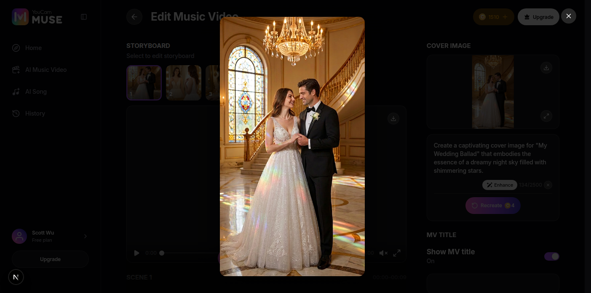
- 1Close
- Download is available both in the lightbox and on the inline preview.
- 1Recreate
- Recreate cost pill: “4”
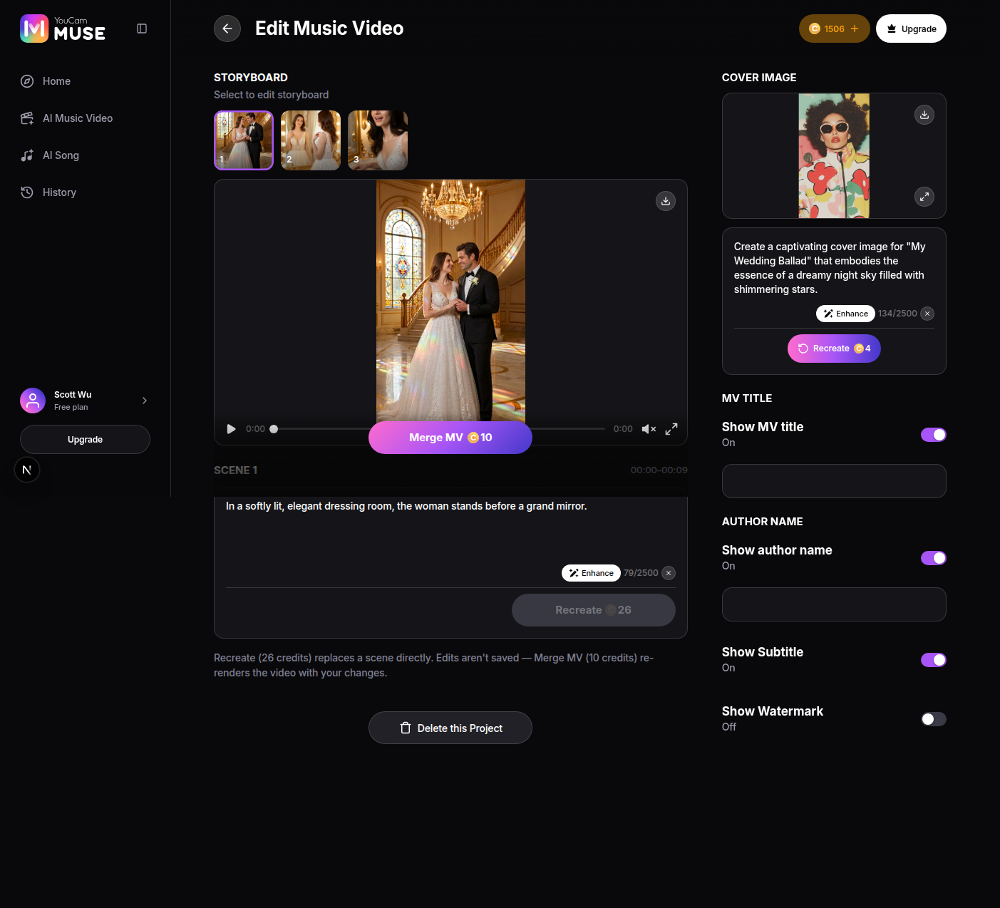
- No “pick which cover” tray, no undo.AC-MV-12 — the previous cover is gone, not archived.
- Merge becomes enabled by this edit alone (storyboardDirty / a pending regen).
The clip strip, the inline preview transport, the scene prompt (2500 max) + Enhance, the scene-version history row, and Recreate — overwrites that scene in place, no take tray, no undo (AC-MV-12). Below 768px the inline pair is replaced by a full-screen view (D8 exception).
- P3-S1 Views the per-clip storyboard strip.
- P3-S2 Views the scene editor for the active clip.
- P3-S3 Edits the scene prompt text.
- P3-S4 Clicks Recreate.
- P3-S5 On a 375px phone, views the top of /mv/edit (before opening a scene).
- P3-S6 Taps a clip in the storyboard strip.
- P3-S7 Edits the scene prompt inside the full-screen view.
- P3-S8 Taps Back.
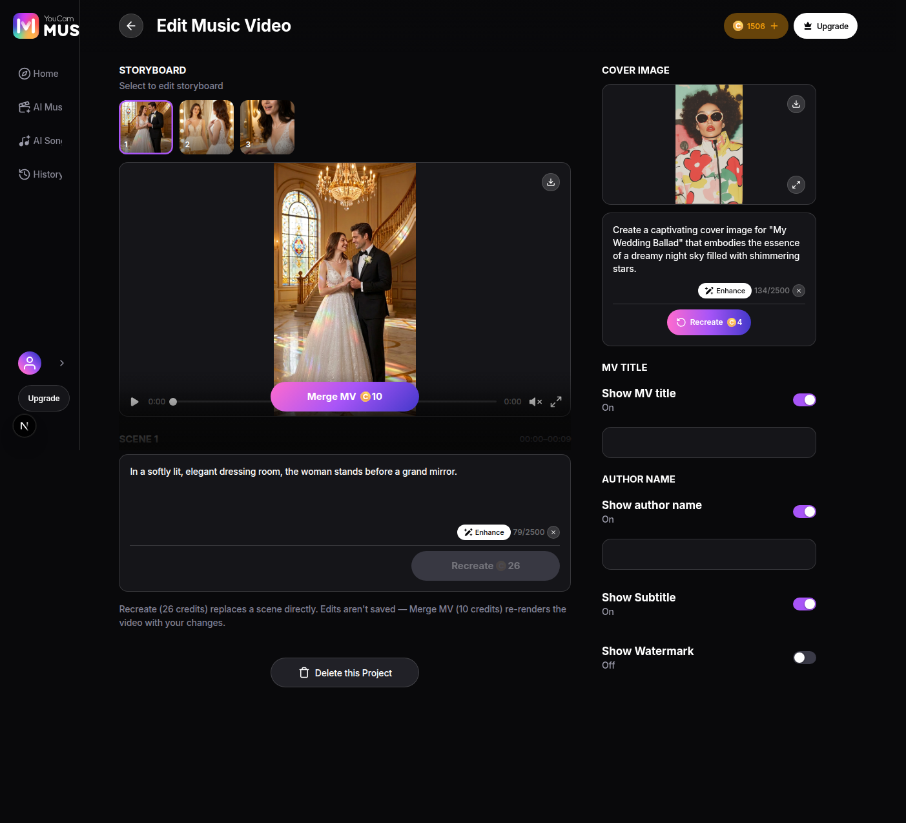
- 1Scene 1
- Clicking a different clip switches BOTH the preview and the scene editor below it to that scene.

- 1Enhance
- Scene header: “SCENE 1” · its time range “00:00–00:09”
- Recreate starts DISABLED on this scene.It only enables once the prompt text actually changes since this scene was selected (2026-08-11 designer request) — recreating an untouched scene would spend credits on a random result driven by nothing new.
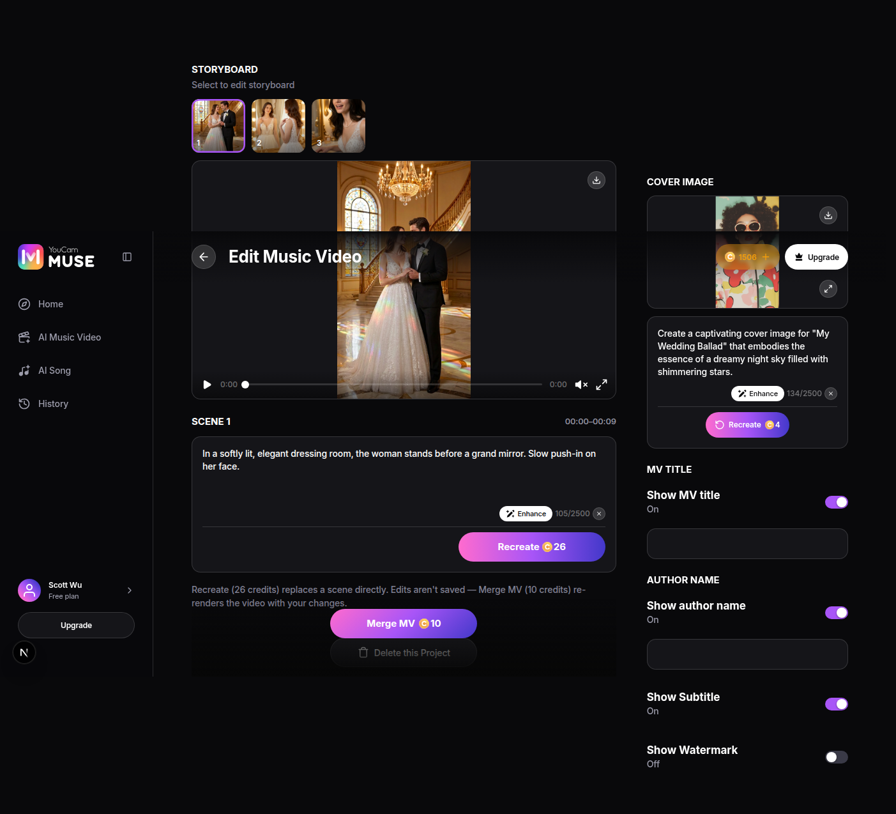
- 1Recreate
- Recreate cost pill in this capture: “26” (a 9-second “sing”/Standard shot)
- The cost is per-shot, not a flat number.It depends on shot kind (sing/story), resolution and the scene’s own duration — not the MV’s overall type or length.
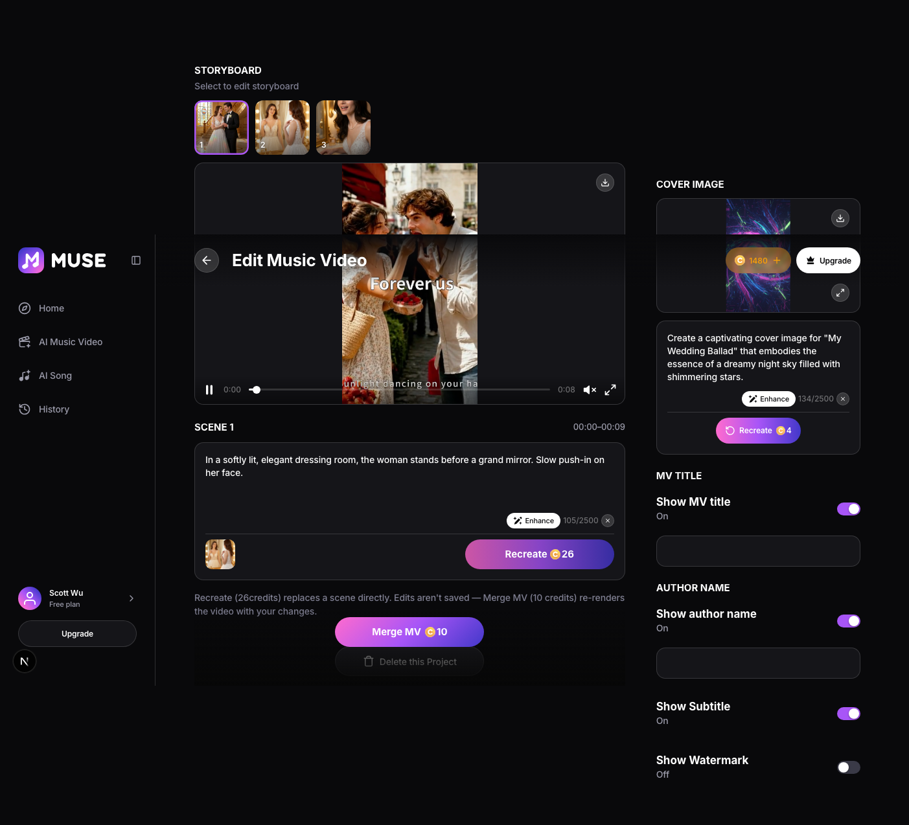
- 1Generated scene history
- Sublabel below the editor: “Recreate (26credits) replaces a scene directly. Edits aren’t saved — Merge MV (10 credits) re-renders the video with your changes.”
- No “pick which take” tray, no undo.AC-MV-12 — same rule as the cover, per-scene.
- The scene-version row is a record of past generations, not a picker.
- The sublabel above is quoted verbatim, rendering bug included.No space before “credits” after the dynamic number, unlike Merge’s flat one — a live app bug, not a spec typo (D-02).
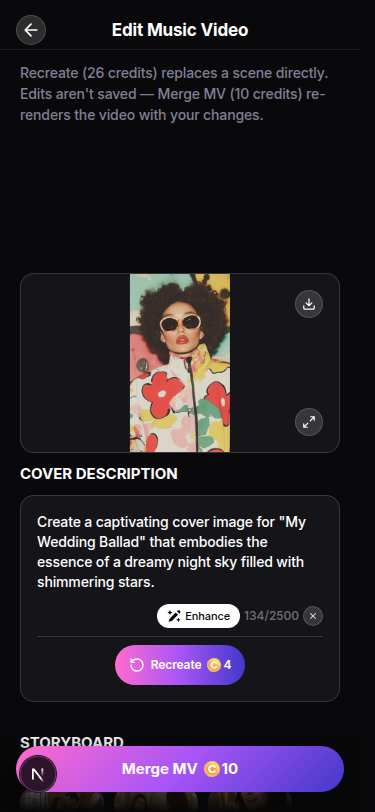
- This is a known layout defect, not a new one.DESIGNER-TODO A16 — `.mv-edit__panel`/`.mv-edit__side` switch to `display: contents` below 767px and give every section an explicit order, but the sublabel and `FloatingCTA`’s spacer carry none, so both default to `order: 0` and sort first. Documented, not fixed (no `src/` authority this build).
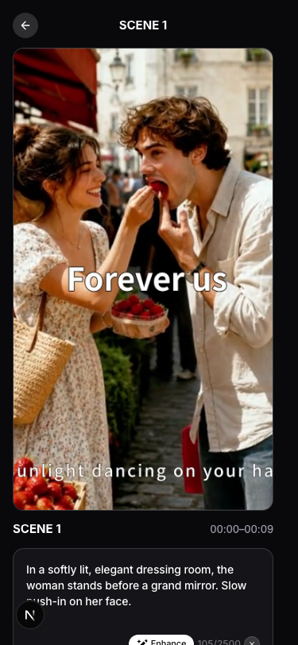
- 1Back
- Header: “SCENE 1”
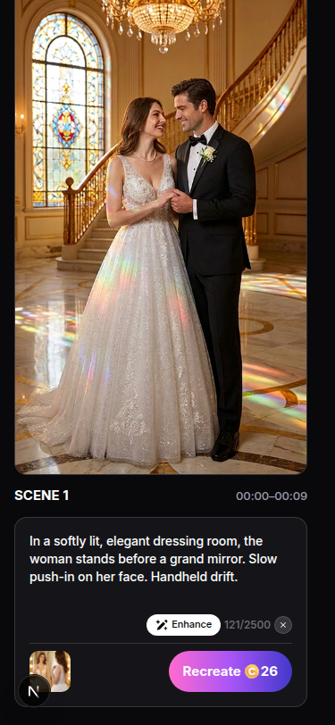
- 1Recreate

- The scene edit made inside the full-screen view persists (same in-memory storyboard as desktop).
MV title/Author toggles+inputs, Show Subtitle, Show Watermark — inline rail sections, not a modal — and Delete this Project.
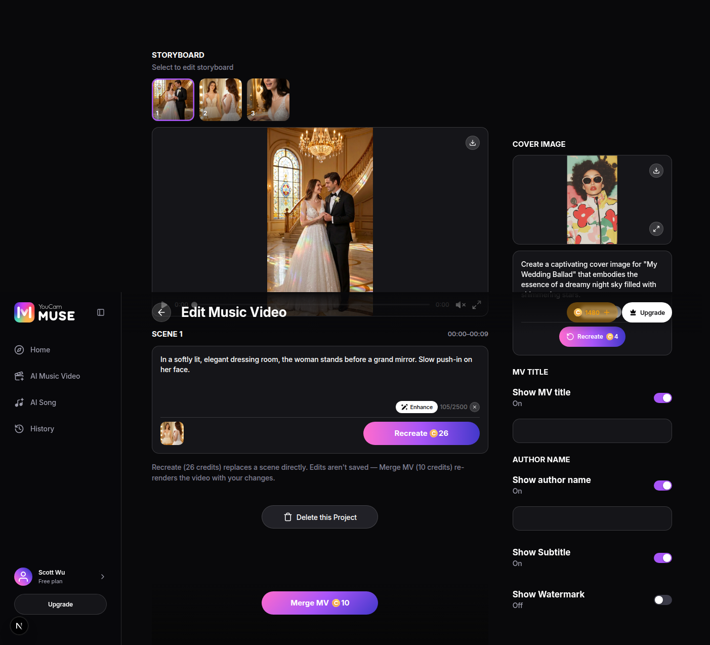
- 1Show MV title
- 2Show Watermark
- The two switches are contract fields, not decoration.`settings.title.on` / `settings.author.on` (`MvSettingsSchema`, C2) decide whether the caption is burned into the rendered video at all — DP ships only the text inputs.
- Any change here marks the flow dirty, enabling Merge.
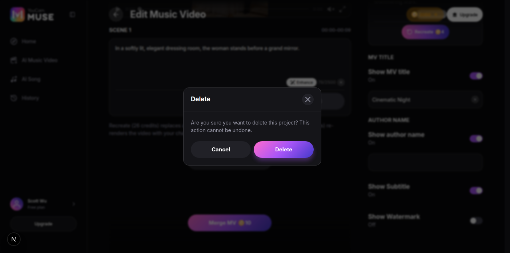
- 1Delete
- Title: “Delete”
- Body: “Are you sure you want to delete this project? This action cannot be undone.”
- Buttons: “Cancel”, “Delete”
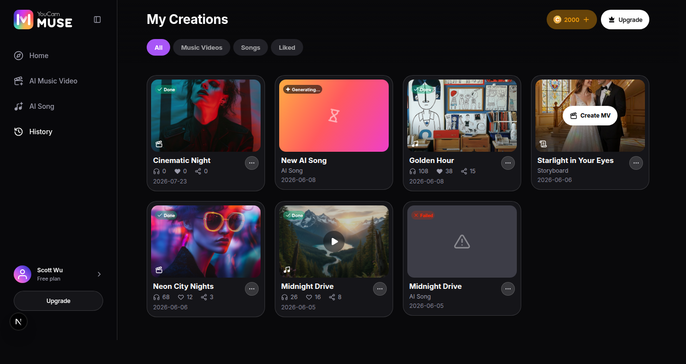
- The History row this flow was seeded from is unaffected.Confirmed live: the same row is still present afterward. “Delete” here means discarding an uncommitted edit, not removing a creation — there is nothing server-side to remove yet.
Re-renders from the current (overwritten) cover/scenes + settings, enabled by ANY pending edit; insufficient balance routes to the buy-credits IAP instead; plus the two edge cases — leaving loses every edit, and a reload with no flow state redirects Home.
- P5-S1 Views Merge MV after the cover/scene recreates and the Watermark toggle above.
- P5-S2 On a separate account with only default credits, after one cover Recreate, clicks Merge MV.
- P5-S3 With sufficient balance, clicks Merge MV.
- P5-S4 Reloads (or deep-links) /mv/edit with no in-memory flow state.
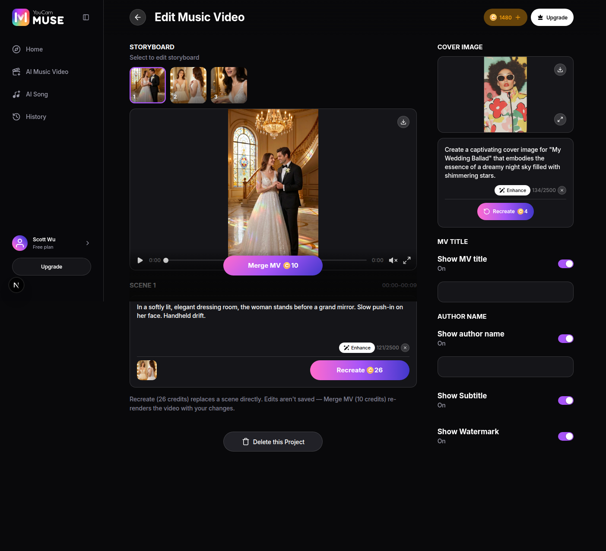
- 1Merge MV
- Merge cost pill: “10”
- Enabled by text edits too.`storyboardDirty` (an edited scene/cover prompt with no regenerate yet) also counts, same as a regenerate or a settings change.
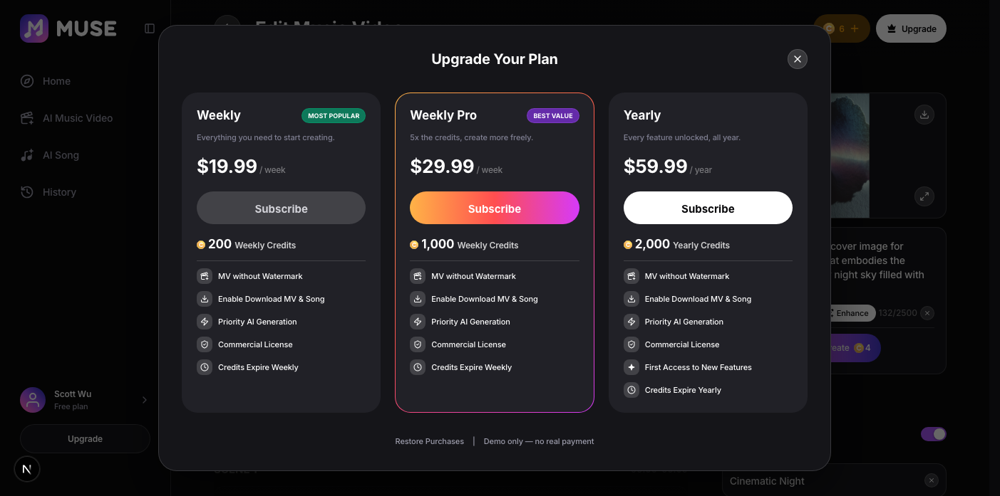
- Dialog title: “Upgrade Your Plan”
- This is the SAME dialog a non-subscriber’s credit pill opens elsewhere in the app.BuyCreditsModal falls back to SubscribeModal for a non-subscriber (CR-06, confirmed cross-spec in shell-auth D-04) — there is no separate Buy Credits pack list to reach here either.
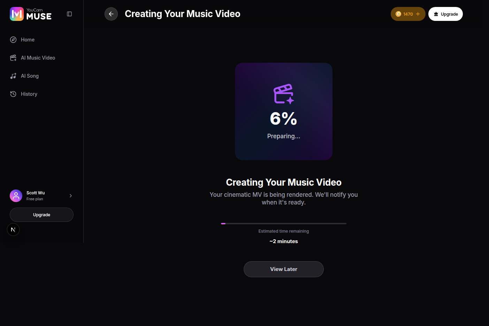
- This route’s own progress/result screens are S2’s territory.Captured to its first frame only — not toured further here.
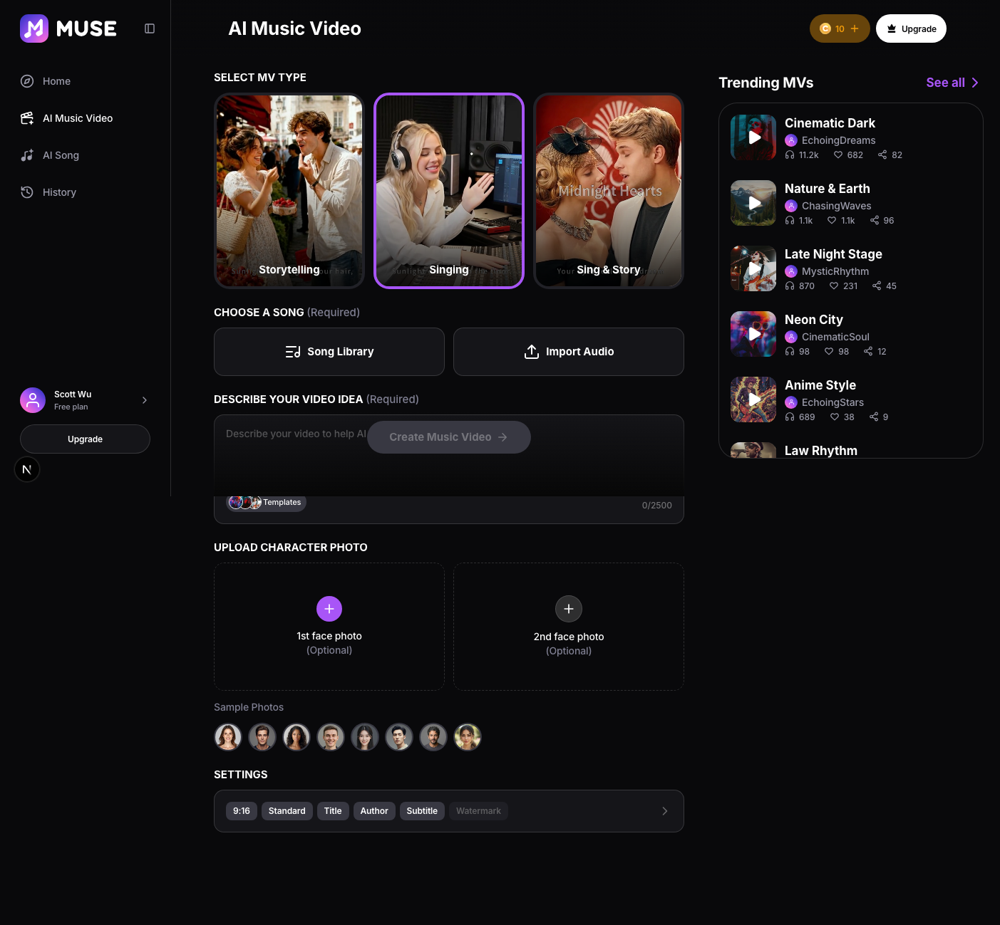
- The same 400ms tolerant wait `/mv/storyboard` uses.Long enough for a real storyboard to hydrate, short enough not to stall a cold visit.
The two output-settings switches this screen adds are real `MvSettingsSchema` fields (C2), not UI-only decoration — they gate whether the paired text is burned into the rendered video.
| Key | Type | Edit MV control | Effect when off | Effect when on |
|---|---|---|---|---|
| settings.title.on | boolean | MV TITLE switch | No title burned into the render | Burns settings.title.text into the render |
| settings.title.text | string | MV TITLE input | Disabled, greyed | The title text, editable |
| settings.author.on | boolean | AUTHOR NAME switch | No author burned into the render | Burns settings.author.text into the render |
| settings.author.text | string | AUTHOR NAME input | Disabled, greyed | The author text, editable |
| settings.showSubtitle | boolean | Show Subtitle switch | No subtitle track | Subtitle burned in |
| settings.watermark | boolean | Show Watermark switch | No watermark | Watermark burned in |
| What the user sees | Comes from |
|---|---|
| MV TITLE switch + input | settings.title.{on,text} |
| AUTHOR NAME switch + input | settings.author.{on,text} |
| Show Subtitle switch | settings.showSubtitle |
| Show Watermark switch | settings.watermark |
The contract of each screen state. The flow diagram shows the transitions; this shows what each state must render.
| State | Entry condition | Visible / enabled | Transitions | Exit |
|---|---|---|---|---|
| Merge MV button | Any pending edit exists — a regenerated scene/cover, a settings toggle, or an edited scene/cover prompt (storyboardDirty) | Enabled; cost pill reads “10” | → /mv/creating (sufficient balance) or “Upgrade Your Plan” (insufficient) — AC-MV-13 | Leaving the page with no Merge discards every edit (MV-E5) |
| Merge MV button | No pending edit | Disabled (grey) | N/A | N/A |
| Scene Recreate button | The active scene’s prompt is unedited since it was selected | Disabled (grey) | Enables once the prompt text changes | Resets to disabled on switching to a different clip |
| Scene Recreate button | The active scene’s prompt has been edited | Enabled; a per-shot dynamic cost pill (e.g. “26”) | → overwrites that scene’s video in place, adds a version thumbnail — AC-MV-12 | No undo; MV-08 |
| Cover Recreate button | Always — no dirty-gate | Enabled; flat cost pill “4” | → overwrites the cover in place — AC-MV-12 | No undo |
Undecided, and blocking something. Everything settled lives beside the rule it governs, not here.
| ID | Question | Blocks | Owner |
|---|---|---|---|
| Q-01 | What does “cost per the Credit Consume MSR” resolve to for Merge/Recreate? | Quoting a concrete number in this spec’s own RULES text (D2) — every spec in this programme carries this same row | Product / RD (the MSR document link is still TBD) |
Every acceptance criterion in plan.md and where this spec defines it — 4 of 5 map to a step. Write the test cases in your test tool; this table is the trace back to the spec.
| Criterion | What it asserts | Specified in |
|---|---|---|
| AC-MV-12 | WHEN Regenerate scene or Recreate cover is invoked, THE SYSTEM SHALL overwrite that scene/cover in place (no picker, no undo) and decrement the balance. | P2-S3 · P2-S4 · P3-S3 · P3-S4 |
| AC-MV-13 | WHEN Merge MV is invoked with sufficient balance, THE SYSTEM SHALL re-render from the current cover/scenes + edited text and charge on start (refunded on failure); WHEN insufficient, open the buy-credits IAP. | P5-S1 · P5-S2 · P5-S3 |
| AC-MV-14 | WHEN Enhance is invoked on a scene prompt or the cover description, THE SYSTEM SHALL replace that field with the enhancePrompt result. | P2-S1 · P3-S2 |
| AC-MV-19 | WHEN render generation starts, THE SYSTEM SHALL charge the matching cost and refund on failure; WHEN the balance is insufficient at the CTA, route to the buy-credits IAP. | P5-S1 · P5-S2 · P5-S3 |
| AC-MV-17b | THE SYSTEM SHALL render /mv/edit at 320/375/768/1024/1440/1920px with no overflow. | Visual-only; the six-tier sweep is e2e/visual-baseline.spec.ts’s job. This spec’s own D8 exception captures only 1403×697 desktop and 375×812 phone (the full-screen mobile scene view), not the other four tiers. |
| Error | Trigger | Message shown to user | Recovery | Where |
|---|---|---|---|---|
| Edits lost on leaving the page | Navigate away (Back, sidebar link, browser back/reload) without tapping Merge MV | “No warning — the screen simply unmounts” | None; every regenerate, recreate and settings/text edit is ephemeral (MV-E5) — redo from scratch on return | P2-S4 / P3-S4 |
| Reload / deep-link with no flow state | Full reload or a direct /mv/edit visit with no in-memory storyboard | “A brief tolerant wait for localStorage hydrate, then a silent redirect — no error toast” | Return via Result’s or History’s own Edit MV entry (MV-E2) | P5-S4 |
| Insufficient balance at Merge | credits < the Merge cost when Merge MV is tapped | “Opens “Upgrade Your Plan” instead of navigating” | Buy credits or subscribe, then retry Merge | P5-S2 |
| Attempt to Edit a published MV | Tap Edit MV on a published/in-review row, from Result or History | “N/A here — the button itself reads “Unpublish to edit” and never opens this screen until unpublished” | Unpublish first, then Edit MV opens normally (MV-E7) | Owned by S2’s P8 / S4’s P4 — not captured in this spec |
The first two are timing/silent conditions a static screenshot cannot fully depict — the “Where” column names the nearest captured step or the sibling spec that owns the boundary.
Where the prototype fakes or stubs behaviour. Build the production must do column — never the prototype behaviour.
| Area | Prototype does | Production must do |
|---|---|---|
| History’s Edit MV fabricates flow state | Instead of loading the MV’s real prior generation, it builds a mock storyboard and a synthetic song (durationSec 145) from the row’s own title and thumbnail alone, and pre-fills the MV title field with that same title. | Production must load the actual persisted storyboard/song for that MV so Edit MV works on the real prior generation, not a placeholder rebuilt from a list-row summary. |
| Delete this Project calls no backend delete | It discards only the in-memory flow and navigates to /history — the underlying creation, if any, is untouched. | Once projects persist server-side, this needs a real delete/discard endpoint, and a decision on what discarding an unmerged edit should do to server state. |
| ID | Question | Decision |
|---|---|---|
| D-01 | The area spec said Merge charges `COST_RENDER` (200) and that the flat `COST_MERGE` (10) had been removed — which does the running code actually do? | Neither claim held: `COST_RENDER` does not exist anywhere in `src/lib/mv/types.ts` (removed 2026-08-19 along with `COST_STORYBOARD`/`COST_REGEN`), and `COST_MERGE = 10` was never removed — confirmed live (the Merge pill reads “10”; the balance drops by exactly 10 across P5-S1→P5-S3). The scene Recreate cost is similarly not a flat 20 — it is `recreateShotCost`, a per-shot rate (26 in this capture). `specs/areas/02-mv-creation.md` is corrected in place (§3 Costs, the MV-P5 docstring, its Merge-MV bullet, AC-MV-12/13/19, §7) under this programme’s D11 rule. |
| D-02 | The Recreate/Merge sublabel sentence reads “(26credits)” with no space before a DYNAMIC number but “(10 credits)” with one before Merge’s flat number, even though the JSX source has an identical literal space in both places — typo in this spec, or a real app bug? | A real, reproducible app bug — confirmed via a direct DOM `textContent` read (not a screenshot/font artifact) across two different scenes and cost values, always missing before the dynamic number. Quoted verbatim in `exact` (P3-S4) rather than silently corrected, with a `strings_ignore` entry; filed to the product owner in this session’s report (no `src/` authority for this build). |
| D-03 | The mobile top-of-page capture (`14_mobile_top_a16`) shows the Recreate/Merge sublabel and the floating Merge bar sorted ABOVE the STORYBOARD section — new finding, or already known? | Already known — `DESIGNER-TODO` A16, the same `display: contents`-with-no-`order` defect as `/mv/storyboard`’s FloatingCTA spacer. Captured (P3-S5, P3-S8) as the evidence this screen was scoped to produce (`PLAN.md`, S3 scope note 1); not fixed here. |
| D-04 | “Unpublish to edit” (MV-E7) blocks Edit MV on a published MV — does this spec walk that boundary? | No — it is asserted on `/mv/result` (S2’s P8) and in History’s menu (S4’s P4). This spec names the precondition in the Error States table and captures nothing, the same neighbour-boundary convention shell-auth used for territory it does not own. |
| D-05 | Which History row demonstrates the fabricated Edit MV entry (P1-S4/S5)? | “Cinematic Night”, a done-MV seed row with 0 plays/likes/shares — picked because it is a plain, never-engaged-with fixture, not because of anything about its content. |
| D-06 | Comments layer for this spec? | Disabled — no Firebase backend exists in this repo yet, same as S1/S4/S6. |
| D-07 | Phone viewport and scope for the D8 exception? | 375×812, scoped to the full-screen `.mv-edit-mobile-scene` view plus one general-page top-of-screen shot (for A16) — not a full phone re-walk of every path. Documented in `capture_screenshots.py`’s docstring so a later re-capture does not drift. |